전기기사 (2012-08-26 기출문제)
1과목: 전기자기학
1. 그림과 같은 직각 코일이
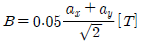
인 자계에 위치하고 있다. 코일에 5[A] 전류가 흐를 때 Z축에서의 토크 [Nm]는?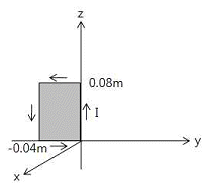
- 2.66×10-4ax[Nm]
- 5.66×10-4ax[Nm]
- 2.66×10-4az[Nm]
- 5.66×10-4az[Nm]
(정답률: 60%)

2. 정전계에 주어진 전하분포에 의하여 발생되는 전계의 세기를 구하려고 할 때 적당하지 않은 방법은?
- 쿨롱의 법칙을 이용하여 구한다.
- 전위를 이용하여 구한다.
- 가우스 법칙을 이용하여 구한다.
- 비오-사바르의 법칙에 의하여 구한다.
(정답률: 70%)
3. 인덕턴스의 단위와 같지 않은 것은?
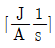
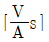
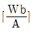
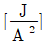
(정답률: 65%)
4. 공극(air gap)이 δ[m]인 강자성체로 된 환상 영구자석에서 성립하는 식은?(단, l[m]는 영구자석의 길이이며 l ≫ δ 이고, 자속밀도와 자계의 세기를 각각 B[Wb/m2, H[AT/m] 라 한다.)
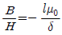
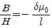
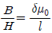
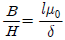
(정답률: 40%)
5. 자장 B=3ax-5ay-6az[Wb/m2] 내에서 점전하 0.2[C]이 속도 v=4ax-2ay-3az[m/s] 로 움직일 때 이 점전하에 작용하는 힘의 크기는 몇 [N]이 되는가?(문제 오류로 실제 시험에서는 정한 정답되리 되었습니다. 여기서는 3번을 누르면 정답 처리 됩니다. 자세한 내용은 해설을 참고하세요.)
- 6.98
- 7.98
- 8.98
- 9.98
(정답률: 75%)
6. 그림과 같은 정방형관 단면의 격자점 ⑥의 전위를 반복법으로 구하면 약 몇 [V]가 되는가?
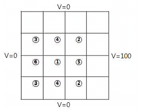
- 6.3
- 9.4
- 18.8
- 53.2
(정답률: 68%)
7. 전계
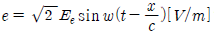
의 평면 전자파가 있다. 진공 중에서 자계의 실효값은 몇 [A/m]인가?- 0.707×10-3Ee
- 1.44×10-3Ee
- 2.65×10-3Ee
- 5.37×10-3Ee
(정답률: 69%)
8. Q=0.15[C]으로 대전하고 있는 큰 도체구에 그 반경이 큰구의 1/2 인 작은 도체구를 접촉했다가 떼면, 작은 도체구가 얻는 전하[C]는 얼마로 되는가?
- 0.01
- 0.⑤
- 0.1
- 0.2
(정답률: 58%)
9. 반지름 a, b인 두 구상 도체 전극이 도전율 k인 매질속에 중심거리 r만큼 떨어져 놓여 있다. 양 전극간의 저항은? (단, r>>a, b 이다.)
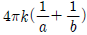
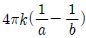
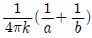
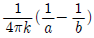
(정답률: 65%)
10. 정현파 자속의 주파수를 3배로 높이면 유기기전력은?
- 2배로 감소
- 2배로 증가
- 3배로 감소
- 3배로 증가
(정답률: 78%)
11. 매질 1은 나일론(비유전율 εs=4)이고, 매질 2는 진공일때 전속밀도 D가 경계면에서 각각 θ1, θ2의 각을 이룰 때 θ2=30° 라고 하면 θ1의 값은?(문제 오류로 가답안 발표시 1번으로 발표되었지만 확정답안 발표시 전항 정답 처리 되었습니다. 여기서는 가답안인 1번을 누르면 정답 처리 됩니다.)
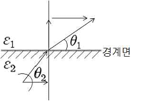
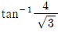
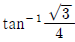
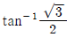
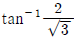
(정답률: 79%)
12. 무한장 솔레노이드에 전류가 흐를 때 발생되는 자계에 관한 설명으로 옳은 것은?
- 외부와 내부 자계의 세기는 같다.
- 내부 자계의 세기는 0이다.
- 외부 자계는 평등 자계이다.
- 내부 자계는 평등 자계이다.
(정답률: 72%)
13. 물질의 자화 현상은?
- 전자의 자전
- 전자의 공전
- 전자의 이동
- 분자의 운동
(정답률: 62%)
14. 두 개의 전기회로 간의 상호 인덕턴스를 구하는데 사용하는 방법은?
- 가우스의 법칙
- 플래밍의 오른손 법칙
- 노이만의 법칙
- 스테판-볼쯔만의 법칙
(정답률: 66%)
15. 공기 중의 두 점전하사이에 작용하는 힘이 5[N]이었다. 두 전하간에 유전체를 넣었더니 힘이 2[N]으로 되었다면 유전체의 비유전율[F/m]은 얼마인가?
- 1
- 2.5
- 5
- 7.5
(정답률: 79%)
16. 공기중에 놓인 지름 1[m]의 구도체에 줄 수 있는 최대 전하는 몇 [C]인가? (단, 공기의 절연내력은 3000[kV/m]이다.)
- 1.67×10-5
- 2.65×10-5
- 3.33×10-5
- 8.33×10-5
(정답률: 40%)
17. 유전체에서 변위 전류에 대한 설명으로 옳은 것은?
- 유전체의 굴절률이 2배가 되면 변위 전류의 크기도 2배가 된다.
- 변위 전류의 크기는 투자율의 값에 비례한다.
- 변위 전류는 자계를 발생시킨다.
- 전속밀도의 공간적 변화가 변위 전류를 발생시킨다.
(정답률: 60%)
18. 진공 중에 있는 대전 도체구의 표면전하밀도가 σ[C/m2] 전위가 V[V]일 때 도체 표면의 법선방향(바깥쪽)을 n이라 할 때 성립되는 관계식은?
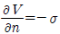
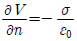
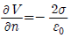
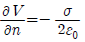
(정답률: 60%)
19. 자기 모멘트 9.8×10-5[Wbㆍm] 의 막대자석을 지구자계의 수평성분 12.5[AT/m]의 곳에서 지자기 자오면으로부터 90도 회전시키는데 필요한 일은 약 몇 [J]인가?
- 1.23×10-3
- 1.03×10-3
- 9.23×10-3
- 9.03×10-3
(정답률: 74%)
20. 그림과 같은 원형 코일이 두 개가 있다. A의 권선수는 1회, 반지름 1[m], B의 권선수는 2회, 반지름은 2[m]이다. A와 B의 코일중심을 겹쳐 두면 중심에서의 자속이 A만 있을 때의 2배가 된다. A와 B의 전류비 IB/IA는?
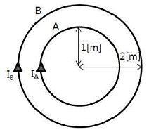
- 1/2
- 1
- 2
- 4
(정답률: 46%)
2과목: 전력공학
21. 전력선 a의 충전전압을 E, 통신선 b의 대지 정전용량을 Cb, a-b 사이의 상호 정전용량을 Cab라고 하면 통신선 b의 정전 유도 전압 Es 는?
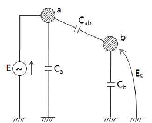
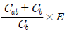
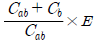
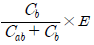
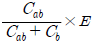
(정답률: 56%)
22. 그림과 같은 단거리 배전선로의 송전단 전압 및 역률은 각각 6600[V], 0.9이고 수전단 전압 및 역률이 각각 6100[V], 0.8일 때 회로에 흐르는 전류 I[A]는? (단, r=10[Ω], x=20[Ω])
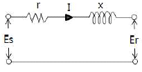
- 96
- 106
- 120
- 126
(정답률: 60%)
23. 송전선로에서 가공지선을 설치하는 목적이 아닌 것은?
- 뇌의 직격을 받을 경우 송전선 보호
- 유도에 의한 송전선의 고전위 방지
- 통신선에 대한 차폐효과 증진
- 철탑의 접지저항 경감
(정답률: 72%)
24. 송전선에 직렬콘덴서를 설치하는 경우 많은 이점이 있는 반면, 이상 현상도 일어날 수 있다. 직렬 콘덴서를 설치하였을 때 타당하지 않은 것은?
- 선로 중에서 일어나는 전압강하를 감소시킨다.
- 송전전력의 증가를 꾀할 수 있다.
- 부하역률이 좋을수록 설치효과가 크다.
- 단락 사고가 발생하는 경우 직렬공진을 일으킬 우려가있다
(정답률: 61%)
25. 송전선로에 매설지선을 설치하는 목적으로 알맞은 것은?
- 직격뇌로부터 송전선을 차폐하기 위하여
- 철탑 기초의 강도를 보강하기 위하여
- 현수애자 1연의 전압 분담을 균일화하기 위하여
- 철탑으로부터 송전선로로의 역섬락을 방지하기 위하여
(정답률: 82%)
26. 유효낙차 150[m], 출력 20000[kw], 회전수 375[rpm]인 수차의 특유속도는 약 몇 [rpm]인가?
- 100
- 150
- 200
- 250
(정답률: 42%)
27. 전선의 굵기가 동일하고 완전히 연가되어 있는 3상 1회선 송전선의 대지정전용량을 옳게 나타낸 것은? (단, r : 도체의 반지름, D : 도체의 등가 선간 거리, h : 도체의 평균 지상 높이이다.)
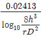
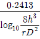
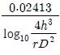
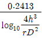
(정답률: 67%)
28. 배전용 변전소의 주변압기로 주로 사용되는 것은?
- 단권 변압기
- 3권선 변압기
- 체강 변압기
- 체승 변압기
(정답률: 65%)
29. 각각 다른 2개의 전력계통을 연락선(Tie line)을 통하여 상호 연계하면 여러 가지 장점이 잇는데, 계통 운용상 이득이 아닌 것은?
- 전력의 융통으로 설비 용량이 저감된다.
- 배후 전력이 커져 단락전류가 감소한다.
- 경제적인 발전력 배분이 가능하다.
- 안정된 주파수 유지가 가능하다.
(정답률: 68%)
30. 수전용 변전설비의 1차측 차단기의 용량은 주로 어느 것에 의하여 정해지는가?
- 수전 계약 용량
- 부하 설비의 용량
- 공급측 전원의 단락 용량
- 수전전력의 역률과 부하율
(정답률: 73%)
31. 500[kVA]의 단상 변압기 상용 3대(결선 Δ-Δ), 예비 1대를 갖는 변전소가 있다. 부하의 증가로 인하여 예비 변압기까지 동원해서 사용한다면 응할 수 있는 최대 부하[kVA]는?
- 약 2000
- 약 1730
- 약 1500
- 약 830
(정답률: 66%)
32. 최소 동작전류값 이상이면 일정한 시간에 동작하는 한시 특성을 갖는 계전기는?
- 정한시 계전기
- 반한시 계전기
- 순한시 계전기
- 반한시성 정한시 계전기
(정답률: 75%)
33. 기력발전소의 열사이클 중 가장 기본적인 것으로 두 개의 등압변화와 두 개의 단열변화로 되는 열사이클은?
- 재생 사이클
- 랭킨 사이클
- 재열 사이클
- 재생 재열 사이클
(정답률: 59%)
34. 그림과 같은 수전단 전력원선도에서 직선 OL은 지상역률 cosθ 인 부하직선을 나타낸다. 다음 설명 중 옳지 않은 것은? (단, C점은 원선도의 중심점이다.)
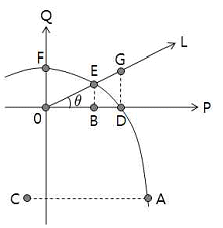
- A점은 이론상의 극한 수전 전력을 표시한다.
- B점은 부하역률이 1일 때의 수전전력을 표시한다.
- G점은 전압 조정을 위하여 진상 무효 전력이 필요하다.
- F점은 전력이 0이므로 역률 조정이 필요 없다.
(정답률: 64%)
35. 계통의 안정도 증진대책이 아닌 것은?
- 발전기나 변압기의 리액턴스를 작게 한다.
- 선로의 회선수를 감소시킨다.
- 중간 조상 방식을 채용한다.
- 고속도 재폐로 방식을 채용한다.
(정답률: 71%)
36. 송전전력, 송전거리, 전선로의 전력 손실이 일정하고 같은 재료의 전선을 사용한 경우 단상 2선식에 대한 3상 3선식의 1선당의 전력비는 얼마인가?
- 0.7
- 1.0
- 1.15
- 1.33
(정답률: 59%)
37. 어떤 공장의 수용설비 용량이 1800[kw], 수용률은 55[%], 평균 부하역률은 90[%]라 한다. 이 공장의 수전설비는 몇 [kVA]로 하면 되는가?
- 900
- 990
- 1100
- 1800
(정답률: 67%)
38. 부하전력 및 역률이 같을 때 전압을 n배 승압하면 전압 강하와 전력손실은 각각 어떻게 되는가?
- 1/n , 1/n2
- 1/n2 , 1/n
- 1/n , 1/n
- 1/n2 , 1/n2
(정답률: 65%)
39. 3상 동기 발전기 단자에서의 고장 전류 계산 시 영상전류 I0, 정상전류 I1과 역상전류 I2가 같은 경우는?
- 1선 지락고장
- 2선 지락고장
- 선간 단락고장
- 3상 단락고장
(정답률: 71%)
40. 일반 회로정수가 A, B, C, D이고 송전단 상전압이 Es인 경우 무부하시 송전단의 충전전류(송전단 전류)는?
- CEs
- ACEs
- (A/C)*ES
- (C/A)*Es
(정답률: 55%)
3과목: 전기기기
41. 변압기 2대를 사용하여 V결선으로 3상 변압하는 경우 변압기 이용률은 얼마[%]인가?
- 47.6
- 57.8
- 66.6
- 86.6
(정답률: 71%)
42. 3상 유도 전동기의 회전방향은 이 전동기에서 발생되는 회전 자계의 회전 방향과 어떤 관계가 있는가?
- 아무 관계도 없다.
- 회전 자계의 회전 방향으로 회전한다.
- 회전 자계의 반대 방향으로 회전한다.
- 부하 조건에 따라 정해진다.
(정답률: 58%)
43. 3상 유도 전동기에서 2차측 저항을 2배로 하면 그 최대 토크는 몇 배로 되는가?
- 1/2
- √2
- 2
- 불변
(정답률: 79%)
44. 돌극형 동기 발전기의 특성이 아닌것은?
- 직축 리액턴스 및 횡충 리액턴스의 값이 다르다.
- 내부 유기기전력과 관계없는 토크가 존재한다.
- 최대 출력의 출력각이 90도이다.
- 리액션 토크가 존재한다.
(정답률: 64%)
45. 다음 중 DC서보모터의 제어 기능에 속하지 않는 것은?
- 역률 제어 기능
- 전류 제어 기능
- 속도 제어 기능
- 위치 제어 기능
(정답률: 66%)
46. 동기 발전기의 회전자 둘레를 2배로 하면 회전자 주변속도는 몇 배가 되는가?
- 1
- 2
- 4
- 8
(정답률: 63%)
47. 실리콘 정류 소자(SCR)와 관계 없는 것은?
- 교류 부하에서만 제어가 가능하다.
- 아크가 생기지 않도록 열의 발생이적다.
- 턴온 시키기 위해서 필요한 최소의 순 전류를 래칭 전류라 한다.
- 게이트 신호를 인가할 때부터 도통할 때까지 시간이 짧다.
(정답률: 66%)
48. Y결선한 변압기의 2차측에 다이오드 6개로 3상 전파의 정류회로를 구성하고 저항 R을 걸었을 때의 3상 전파 직류 전류의 평균치 I[A]는?(단, E는 교류측의 선간전입이다.)
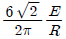
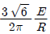
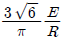
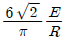
(정답률: 45%)
49. 권수가 같은 2대의 단상 변압기로 3상 전압을 2상으로 변압하기 위하여 스코트 결선을 할 때 T좌 변압기의 권수는 전권수의 어느 점에서 택해야 하는가?
- 1/√2
- 1/√3
- √3/2
- 2/√3
(정답률: 58%)
50. 전동기 기동시 1차 각상의 권선에 정격전압의 1/√3 전압이 가해지고, 기동 전류는 전 전압기동을 한 경우보다 1/3이 되는 기동법은?
- 전전압 기동법
- Y-Δ기동법
- 기동 보상기법
- 기동 저항기 기동법
(정답률: 71%)
51. 어떤 수차용 교류 발전기의 단락비가 1.2이다. 이 발전기의 % 동기임피던스는?
- 0.12
- 0.25
- 0.52
- 0.83
(정답률: 76%)
52. 200[kVA]의 단상 변압기가 있다. 철손 1.6[kW], 전부하동손 3.2[kW]이다. 이 변압기의 최대 효율은 어느 정도의 전부하에서 생기는가?
- 1/2
- 1/4
- 1/√2
- 1
(정답률: 61%)
53. 권선형 유도전동기의 전부하 운전시 슬립이 4[%]이고 2차 정격전압이 150[V]이면 2차 유도 기전력은 몇 [V]인가?
- 9
- 8
- 7
- 6
(정답률: 74%)
54. 3상 유도전동기의 특성에서 비례추이하지 않는 것은?
- 출력
- 1차전류
- 역률
- 2차전류
(정답률: 47%)
55. 단자전압 220[V]에서 전기자 전류 30[A]가 흐르는 직권 전동기의 회전수는 500[rpm]이다. 전기자 전류 20[A]일 때의 회전수는 약 몇 [rpm]인가? (단, 전기자 저항과 계자권선의 저항의 합은 0.8[Ω]이고 자기 포화와 전기자 반작용은 무시한다.)
- 620
- 680
- 720
- 780
(정답률: 28%)
56. 다음 중 권선형 유도전동기의 기동법은?
- 분상 기동법
- 2차 저항기동법
- 콘덴서 기동법
- 반발 기동법
(정답률: 78%)
57. 동기 발전기 단절권의 특징이 아닌 것은?
- 고조파를 제거해서 기전력의 파형이 좋아진다.
- 코일 단이 짧게 되므로 재료가 절약된다.
- 전절권에 비해 합성 유기기전력이 증가한다.
- 코일 간격이 극 간격보다 작다.
(정답률: 62%)
58. 1차 전압 2200[V], 무부하 전류 0.088[A]인 변압기의 철손이 110[W]이었다. 자화 전류는 약 몇 [A]인가?
- 0.⑤5
- 0.038
- 0.072
- 0.088
(정답률: 61%)
59. 단상 직권 정류자 전동기에 있어서의 보상권선의 효과로 틀린 것은?
- 전동기의 역률을 개선하기 위한 것이다.
- 전기자 기자력을 상쇄시킨다.
- 누설 리액턴스가 적어진다.
- 제동 효과가 있다.
(정답률: 45%)
60. 직류 발전기를 병렬운전할 때 균압모선이 필요한 직류기는?
- 직권 발전기, 분권 발전기
- 직권 발전기, 복권 발전기
- 복권 발전기, 분권 발전기
- 분권 발전기, 단극 발전기
(정답률: 76%)
4과목: 회로이론 및 제어공학
61. 다음 논리회로의 출력은?
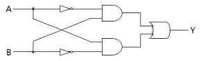
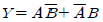
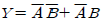
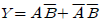
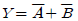
(정답률: 74%)
62. Routh 안정도 판별법에 의한 방법 중 불안정한 제어계의 특성 방정식은?
- s3+2s2+3s+4=0
- s3+s2+5s+4=0
- s3+4s2+5s+2=0
- s3+3s2+2s+8=0
(정답률: 74%)
63. 그림과 같은 신호흐름 선도에서 전달함수 C/R 는?
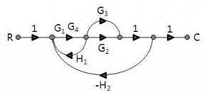
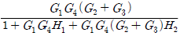
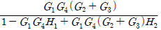
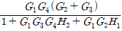
(정답률: 70%)
64. 샘플러의 주기를 T라 할 때 S-평면상의 모든 점은 식 Z=esT에 의하여 Z-평면상에 사상 된다. S-평면의 좌반평면상의 모든 점은 Z-평면상 단위원의 어느 부분으로 사상되는가?
- 내점
- 외점
- 원주상의 점
- Z-평면 전체
(정답률: 75%)
65. 다음 쌍곡선 함수의 라플라스 변환은?
(정답률: 59%)
66. 특성방정식 s3+34.5s2+7500s+7500k=0로 표시되는 계통이 안정되려면 k의 범위는?
- 0 < k < 34.5
- k < 0
- k > 34.5
- 0 < k < 69
(정답률: 71%)
67. 개루프 전달함수 의 이탈점에 해당되는 것은?
- -2.5
- -2
- -1
- -0.5
(정답률: 51%)
68. 다음의 신호선도를 메이슨의 공식을 이용하여 전달함수를 구하고자 한다. 이 신호선도에서 루프(loop)는 몇 개인가?
- 1
- 2
- 3
- 4
(정답률: 74%)
69. 의 나이퀴스트 선도는? (단, K > 0 이다.)
(정답률: 71%)
70. 다음 전달함수 중 적분 요소에 해당되는 것은?
- 전위차계
- 인덕턴스 회로
- RC 직렬 회로
- LR 직렬 회로
(정답률: 65%)
71. 그림과 같은 회로의 a,b 단자간의 전압은?
- 2V
- 3V
- 6V
- 9V
(정답률: 48%)
72. L형 4단자 회로망에서 4단자 상수가 A=15/4, D=1 이고, 영상 임피던스 Z02=12/5[Ω] 일 때, 영상 임피던스 Z01 은 몇 [Ω]인가?
- 8
- 9
- 10
- 11
(정답률: 60%)
73. 다음 함수의 역라플라스 변환은?
- e-t+e-2t
- e-t-e-2t
- e-t-2e-2t
- e-t+2e-2t
(정답률: 59%)
74. 그림의 회로에서 스위치 S를 닫을 때의 충전전류 i(t)[A] 는 얼마인가? (단, 콘덴서에 초기 충전전하는 없다.)
(정답률: 75%)
75. 무왜형 선로를 설명한 것 중 옳은 것은?
- 특성 임피던스가 주파수의 함수이다.
- 감쇠정수는 0이다.
- LR=CG의 관계가 있다.
- 위상속도 v는 주파수에 관계가 없다.
(정답률: 44%)
76. 2단자 임피던스 함수 일 때 극점(pole)은?
- -1, -2
- -3, -4
- -1, -2, -3, -4
- -1, -3
(정답률: 74%)
77. 그림과 같은 파형의 순시값은?
(정답률: 68%)
78. 스위치 S를 열었을 때 전류계의 지시는 10[A]이었다. 스위치 S를 닫았을 때 전류계의 지시는 몇 [A]인가?
- 8
- 10
- 12
- 15
(정답률: 69%)
79. 내부 임피던스가 0.3+j2[Ω]인 발전기에 임피던스가 1.7+j3[Ω]인 선로를 연결하여 전력을 공급한다. 부하 임피던스가 몇 [Ω]일 때 최대전력이 전달되는가?
- 2
- 2-5j
- 2÷j5
(정답률: 67%)
80. 어떤 함수f(t)를 비정현파의 푸리에 급수에 의한 전개를 옳게 나타낸 것은?
(정답률: 63%)
5과목: 전기설비기술기준 및 판단기준
81. 사용 전압이 440[V]이며 사람이 접촉할 우려가 있는 장소에 옥내배선을 케이블 공사로 시공하는 경우 전선의 피복에 사용하는 금속체에는 몇 종 접지공사를 하여야 하는가?(관련 규정 개정전 문제로 여기서는 기존 정답인 1번을 누르면 정답 처리됩니다. 자세한 내용은 해설을 참고하세요.)
- 특별 제 3종 접지공사
- 제 2종 접지공사
- 제 3종 접지공사
- 제 1종 접지공사
(정답률: 50%)
82. 정격전류가 15[A]를 넘고 20[A]이하인 배선용 차단기로 보호되는 저압 옥내전로의 콘센트는 정격전류가 몇 [A] 이하인 것을 사용하여야 하는가?
- 15
- 20
- 30
- 50
(정답률: 58%)
83. 욕실 등 인체가 물에 젖어 있는 상태에서 물을 사용하는 장소에 콘센트를 시설하는 경우에 적합한 누전차단기는?
- 정격감도전류 15[mA]이하, 동작시간 0.03초 이하의 전압 동작형 누전 차단기
- 정격감도전류 15[mA]이하, 동작시간 0.03초 이하의 전류 동작형 누전 차단기
- 정격감도전류 15[mA]이하, 동작시간 0.3초 이하의 전압 동작형 누전 차단기
- 정격감도전류 15[mA]이하, 동작시간 0.3초 이하의 전류 동작형 누전 차단기
(정답률: 68%)
84. 특고압 가공 전선로의 지지물 양쪽의 경간의 차가 큰 곳에 사용되는 철탑은?
- 내장형 철탑
- 인류형 철탑
- 각도형 철탑
- 보강형 철탑
(정답률: 74%)
85. 가공전선로의 지지물에 하중이 가해지는 경우에 그 하중을 받는 지지물의 기초 안전율은 몇 이상이어야 하는가?
- 0.5
- 1
- 1.5
- 2
(정답률: 68%)
86. 특고압 가공전선과 가공약전류 전선 사이에 사용하는 보호망에 있어서 보호망을 구성하는 금속선의 상호 간격[m]은 얼마 이하로 시설하여야 하는가?
- 0.5
- 1.0
- 1.5
- 2.0
(정답률: 45%)
87. 접지 공사에 관한 내용 중 옳지 않은 것은?(오류 신고가 접수된 문제입니다. 반드시 정답과 해설을 확인하시기 바랍니다.)
- 특별 제 3종 접지공사를 하여야 하는 금속체와 대지간의 전기 저항치가 10[Ω]이하인 경우에는 특별 제 3종 접지공사를 한 것으로 본다.
- 지중에 매설되고 있고 대지와의 전기 저항치가 3[Ω] 이하의 값을 유지하고 있는 금속제 수도관로는 접지공사의 접지극으로 사용할 수 있다.
- 접지선을 철주 기타의 금속체를 따라서 시설하는 경우 접지극을 철주의 밑면으로부터 30[cm] 이상의 깊이에 매설하는 경우 이외에는 접지극을 지중에서 그 금속체로부터 1[m]이상 떼어 메설한다.
- 대지와의 사이에 전기저항치가 2[Ω]이하인 건물의 철골 기타의 금속제는 이를 비접지식 고압전로에 시설하는 기계기구의 철대에 실시하는 제 3종 접지공사의 접지극으로 사용할 수 있다.
(정답률: 37%)
88. 전력보안 가공 통신선 시설시 통신선은 조가용 선으로 조가 하여야 하는데 지름 몇[mm] 경동선을 사용하는 경우에 는 그러하지 않아도 되는가? (단, 케이블을 제외한다.)(오류 신고가 접수된 문제입니다. 반드시 정답과 해설을 확인하시기 바랍니다.)
- 1.2
- 2.0
- 2.6
- 3.2
(정답률: 57%)
89. 고압 가공인입선의 전선으로는 지름이 몇 [mm]이상의 경동선의 고압 절연전선을 사용하는가?
- 1.6
- 2.6
- 3.5
- 5.0
(정답률: 48%)
90. 의료용 접지센터, 의료용 콘센트 및 의료용 접지단자는 특별한 경우 이외에는 의료실 바닥 위 몇 [cm] 이상의 높이에 시설하여야 하는가?(관련 규정 개정으로 기존 정답을 4번입니다. 여기서는 4번을 누르면 정답 처리 됩니다. 자세한 내용은 해설을 참고하세요.)
- 30
- 40
- 60
- 80
(정답률: 66%)
91. 최대 사용 전압이 6600[V]인 3상 유도전동기의 권선과 대지 사이의 절연내력 시험전압은 최대 사용전압의 몇 배인가?
- 1.75
- 1.0
- 1.25
- 1.5
(정답률: 60%)
92. 가공 전선로의 지지물에 지선을 시설하려고 한다. 이 지선의 기준으로 옳은 것은?
- 소선지름 : 2.0mm, 안전율 : 2.5, 허용 인장하중 2.11kN
- 소선지름 : 2.6mm, 안전율 : 2.5, 허용 인장하중 4.31kN
- 소선지름 : 1.6mm, 안전율 : 2.0, 허용 인장하중 4.31kN
- 소선지름 : 2.6mm, 안전율 : 1.5, 허용 인장하중 3.21kN
(정답률: 73%)
93. 가공 전선로의 지지물에 취급자가 오르고 내리는데 사용하는 발판 볼트 등은 지표상 몇 [m] 미만에 시설하여서는 아니 되는가?
- 1.2
- 1.8
- 2.2
- 2.5
(정답률: 76%)
94. 저압 연접 인입선은 인입선에서 분기하는 점으로부터 몇 [m]를 초과하는 지역에 미치지 아니하도록 시설하여야 하는가?
- 10
- 20
- 100
- 200
(정답률: 52%)
95. 전기철도에서 가공 교류절연귀선의 시설은 어느 경우에 준하여 시설하여야 하는가?(오류 신고가 접수된 문제입니다. 반드시 정답과 해설을 확인하시기 바랍니다.)
- 고압 가공전선
- 가공 약전류 전선
- 저압 가공전선
- 특고압 가공전선
(정답률: 43%)
96. 고압 및 특고압의 전로에 절연내력 시험을 하는 경우 시험 전압을 연속해서 얼마동안 가하는가?
- 10초
- 2분
- 6분
- 10분
(정답률: 72%)
97. 수소 냉각식 발전기, 조상기 또는 이에 부속하는 수소 냉각 장치에 시설하는 계측 장치에 해당되지 않는 것은?
- 수소의 순도가 85%이하로 저하한 경우의 경보장치
- 수소의 압력을 계측하는 장치
- 수소의 도입량과 방출량을 계측하는 장치
- 수소의 온도를 계측하는 장치
(정답률: 50%)
98. 사용전압이 300[V]인 지중전선이 지중약전류 전선과 접근 또는 교차할 때 상호간에 내화성 격벽을 설치한다면 상호간의 이격거리는 몇 [cm] 이하인 경우인가?
- 30
- 50
- 60
- 100
(정답률: 51%)
99. 특고압전로와 저압전로를 결합한 변압기에 실시한 제 2종 접지공사의 저항 값은 몇 [Ω]이하로 하여야 하는가?(단, 전로에 지락이 생겼을 때 1초 이내에 차단하는 장치가 되어 있으며, 1선 지락 전류는 6[A]이다.)(오류 신고가 접수된 문제입니다. 반드시 정답과 해설을 확인하시기 바랍니다.)
- 10
- 20
- 25
- 30
(정답률: 38%)
100. 발전소에서 계측장치를 시설하지 않아도 되는 것은?
- 발전기 베어링 및 고정자의 온도
- 특고압용 변압기의 온도
- 증기터빈에 접속하는 발전기의 역률
- 주요 변압기의 전압 및 전류 또는 전력
(정답률: 69%)